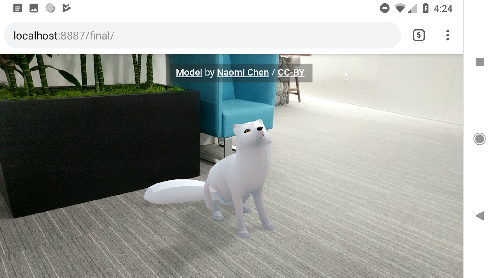
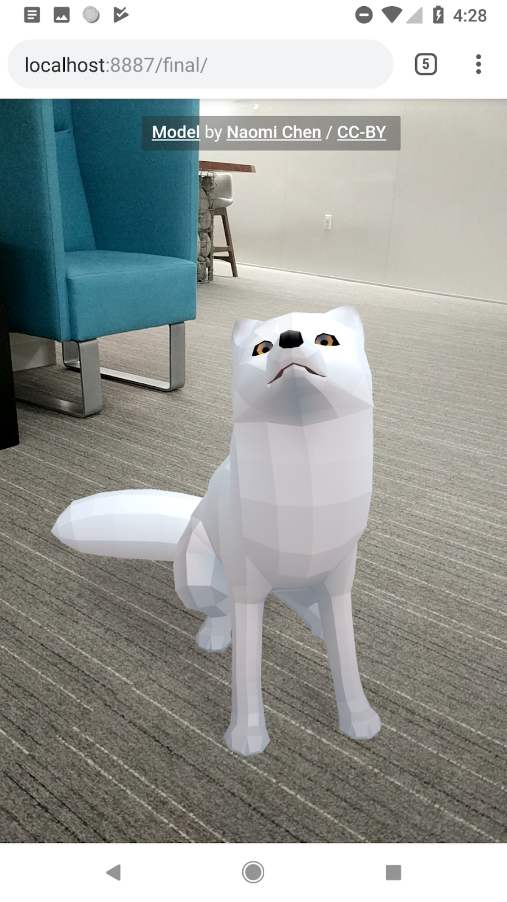
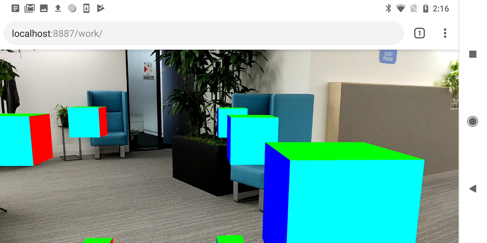

Ce codelab est un exemple pas à pas de conception d'une application web AR. Elle utilise JavaScript pour réaliser le rendu de modèles 3D qui apparaissent comme s'ils existaient dans la réalité.
Vous allez utilisez l'API en cours de développement WebXR, (l'API qui succède à l'API WebVR), qui combine les fonctionnalitées de la réalité augmentée (AR) et la réalité virtuelle (VR). Nous allons nous focaliser sur les extensions expérimentales AR de l'API WebXR Device qui sont en développement dans Chrome.

Qu'est-ce que la réalité augmentée?
La réalitée augmentée (AR) est un terme généralement utilisé pour décrire le mélange de graphiques générés par ordinateur avec le monde réel, ce qui, dans le cas de la réalité augmentée avec un téléphone, veut dire placer de manière convaincante un graphique générée par ordinateur au-dessus du flux vidéo de l'appareil photo. Pour que cet effet reste convaincant même quand le téléphone bouge, le téléphone doit connaître l'environnement dans lequel il évolue, c'est-à-dire détecter les surfaces et estimer l'éclairage ambiant. En complément, le téléphone doit également déterminer sa "position" et son "orientation" dans ces environnement réel en 3 dimensions.
L'usage de la réalité augmentée est en constante augmentation, et avec un usage grandissant dans des applications populaires comme les filtres de "selfies" ou de jeux AR. Aujourd'hui, le parc comprend des centaines de millions de téléphone compatibles avec la réalité augmentée, seulement un an après la sortie d'ARCore, la plateforme de réalité augmentée de Google, et ARKit d'Apple. Avec cette technologie maintenant dans les mains de millions de personne, les propositions d'extensions AR de l'API WebXR peuvent être implémentées derrière des drapeaux dans les navigateurs.
Ce que vous allez concevoir
Dans ce codelab, nous allons concevoir une application qui va vous permettre de prévisualiser des plats dans un restaurant, en plaçant au-dessus de votre assiette un modèle en utilisant la réalité augmentée. Votre application va :
|  |
Ce que vous allez apprendre
- Comment utiliser l'API WebXR
- Comment trouver une surface en utilisant les tests de collisions de la réalité augmentée
- Comment charger et afficher un modèle 3D synchronisé avec le flux vidéo de l'appareil photo
Ce codelab est focalisé sur les APIs de réalité augmentée. Les concepts externes et non pertinents ne seront pas expliqués ici et fournis tel quel dans le dépôt de code.
⚠ Ne fonctionne pas dans les dernières versions de Chrome Dev et Canary ⚠
L'API WebXR est en cours de développement et soumise régulièrement à des changements. Ce codelab a été testé avec la version 70-72 de Chrome Dev.
Ce dont vous avez besoin
Ceci est un aperçu de tout ce dont vous avez besoin, et nous verrons tout ceci en détail après :
- un PC de développement et un serveur local d'hébergement type Apache, nginx ou http-server (au travers de Node.js/npm)
- un téléphone compatible ARCore tournant sous Android 8.0 Oreo
- ARcore installé sur le téléphone (Chrome vous proposera de l'installer)
- Chrome Dev. Utilisez une version entre 70-72, et utilisez la version "Dev build" (les branchements ARCore ne sont pas encore livrés sur les versions beta/prod)
- Web Server pour Chrome, ou votre propre serveur web
- un câble USB reliant votre téléphone à votre PC
- l'exemple de code du codelab
- un éditeur de code
- des connaissances en HTML, CSS, JavaScript et Chrome Devtools
Obtenez Chrome et ses fonctionnalités AR
A l'heure de l'écriture de ce codelab, les fonctionnalités AR sont implémentées dans Chrome Dev à partir de la version 70.
Vous pouvez y accéder dans Paramètres -> A propos de Chrome et voir la version de Chrome que vous utilisez.
La version actuelle (74) de ChromeDev étant trop récente, veuillez installer Chrome Dev avec le lien ci-dessous :
- Chrome Dev : Chrome Dev 72.0.3626.14
L'apk est généralement en architecture armeabi-v7a.
S'assurer que les fonctionnalités AR sont activées dans Chrome
A l'heure de l'écriture de ce codelab, les fonctionnalités AR sont implémentées derrière les drapeaux webxr et webxr-hit-test. Pour activer le support de l'API WebXR dans Chrome :
- vérifiez que votre téléphone fonctionne bien sous Android 8.0 Oreo
- vérifiez que votre téléphone est bien compatible ARCore ici
- vérifiez que votre version de Chrome est >= 74
- tapez
chrome://flagsdans la barre d'adresse - tapez
webxrdans le champ de recherche des drapeaux - activez le drapeau WebXR Device API (
#webxr)
- note : ignorez le drapeau WebVR (
#enable-webvr)
- activez le drapeau WebXR Hit Test (
#webxr-hit-test) - redémarrez Chrome pour vous assurez que les drapeaux sont actifs

Visitez le lien ci-dessous sur votre téléphone pour essayer l'étape 1 du codelab. Si vous obtenez une page avec un message "Votre navigateur ne comporte pas les fonctionnalités AR", re-vérifiez la version de Chrome Canary et les drapeaux WebXR, qui requiert un redémarrage du navigateur.
Téléchargez le code source du codelab
Cliquez sur le lien ci-dessous pour téléchargez le code source du codelab sur votre PC :
Dé-zippez ce fichier. Vous allez obtenir un dossier (webxr-codelab), qui contient dans des dossiers les différentes étapes du codelab, avec des ressources communes associées.
Les dossiers etape-NN contiennent les sources pour les étapes correspondantes du codelab. Ils sont là pour référence.
Nous allons démarrer le codelab avec le dossier work.
Installez et vérifiez votre serveur web
Vous êtes libre d'utiliser votre propre serveur web, mais nous allons voir ici comment utiliser Chrome Web Server si vous n'en avez pas un. Si vous n'avez pas cette application installée sur votre ordinateur, vous pouvez l'installer depuis le Chrome Web Store.
Après l'installation, cliquez sur le raccourci "Applications" dans un nouvel onglet Chrome.

Vous devriez voir apparaître cette fenêtre qui va vous permettre de configurer votre serveur local.

- cliquez sur le bouton choose folder, et sélectionnez le dossier
webxr-codelab. Cela va vous permettre d'héberger votre travail en cours de développement via une addresse mise en avant dans la fenêtre (dans la section Web Server URL(s)). - dans les options, vérifiez que Automatically show index.html est bien activée
- ARRÊTEZ et REDÉMARREZ le serveur en activant le bouton glissant

- Vérifiez qu'au moins une adresse apparaît :
- http://127.0.0.1:8887 — l'adresse par défaut localhost
Maintenant nous allons configurer votre téléphone afin qu'en visitant localhost:8887 vous ayez accès au même port sur votre PC.
- sur votre PC, dans Chrome, saisissez dans votre barre d'adresse
chrome://inspectet cliquez sur le bouton Port forwarding...

Utilisez le paramètre Port forwarding settings pour transmettre le port 8887 vers localhost:8887. Vérifiez ensuite que l'option Enable port forwarding est active.

Activez le mode développeur sous Android :
- rendez-vous dans les paramètres
- cliquez sur "A propos du téléphone"
- cliquez sur "Informations sur le logiciel"
- cliquez plusieurs fois sur le "Numéro de build" afin d'activer le mode développeur
Activez le débogage USB :
- rendez-vous dans les paramètres
- cliquez sur "Options de développement"
- activez l'option "Débogage USB"
Testez votre connection :
- connectez votre téléphone à votre PC avec votre câble USB
- sur votre téléphone, saisissez
http://localhost:8887dans la barre d'adresse. - sur votre téléphone, cliquez sur le dossier
workpour chargez la pagework/index.html
Vous devez normalement voir cette page... | ...sinon, vérifiez la version de Chrome Canary, les drapeaux dans |
|
|


Une fois la connecton opérationnelle, cliquez sur le bouton "Entrez dans l'expérience de réalité augmentée". Il vous sera proposé d'installer ARCore.

La première fois que vous lancez une application web AR, une boît de dialogue concernant les autorisations d'accès à votre appareil photo apparaîtra.
|
|


Une fois que tout fonctionne bien, vous devriez voir une scène avec des cubes surplombant le flux vidéo de votre appareil photo. La compréhension de l‘environnement s'améliore à mesure que vous vous déplacez et bougez votre téléphone, cela aide à stabiliser les choses.

Histoire
The app's shell is the minimal HTML, CSS, and JavaScript that is required to power the user interface of a progressive web app and is one of the components that ensures reliably good performance. Its first load should be extremely quick and immediately cached. "Cached" means that the shell files are loaded once over the network and then saved to the local device. Every subsequent time that the user opens the app, the shell files are loaded from the local device's cache, which results in blazing-fast startup times.
App shell architecture separates the core application infrastructure and UI from the data. All of the UI and infrastructure is cached locally using a service worker so that on subsequent loads, the Progressive Web App only needs to retrieve the necessary data, instead of having to load everything.
Implémentation
Using the app shell architecture allows you to focus on speed, giving your Progressive Web App similar properties to native apps: instant loading and regular updates, all without the need of an app store.
Le futur
TODO
There are multiple ways to get started with any project, in this case, to keep our project as simple as possible and concentrate on Progressive Web Apps, we've provided you with all of the resources you'll need.
Create the HTML for the App Shell
Now we'll add the core components we discussed in Architect the App Shell.
Remember, the key components will consist of:
- Header with a title, and add/refresh buttons
- Container for forecast cards
- A forecast card template
- A dialog for adding new cities
- A loading indicator
The index.html file that is already in your work directory should look something like this (this is a subset of the actual contents, don't copy this code into your file):
<!DOCTYPE html>
<html>
<head>
<meta charset="utf-8">
<meta http-equiv="X-UA-Compatible" content="IE=edge">
<meta name="viewport" content="width=device-width, initial-scale=1.0">
<title>Weather PWA</title>
<link rel="stylesheet" type="text/css" href="styles/inline.css">
</head>
<body>
<header class="header">
<h1 class="header__title">Weather PWA</h1>
<button id="butRefresh" class="headerButton"></button>
<button id="butAdd" class="headerButton"></button>
</header>
<main class="main">
<div class="card cardTemplate weather-forecast" hidden>
. . .
</div>
</main>
<div class="dialog-container">
. . .
</div>
<div class="loader">
<svg viewBox="0 0 32 32" width="32" height="32">
<circle id="spinner" cx="16" cy="16" r="14" fill="none"></circle>
</svg>
</div>
<!-- Insert link to app.js here -->
</body>
</html>Notice the loader is visible by default. This ensures that the user sees the loader immediately as the page loads, giving them a clear indication that the content is loading.
To save time, we've also already created the stylesheet for you to use.
Check out the key JavaScript app code
Now that we have most of the UI ready, it's time to start hooking up the code to make everything work. Like the rest of the app shell, be conscious about what code is necessary as part of the key experience and what can be loaded later.
Your work directory also already includes the app code (scripts/app.js), in it you'll find:
- An
appobject that contains some of the key information necessary for the app. - The event listeners for all of the buttons in the header (
add/refresh) and in the add city dialog (add/cancel). - A method to add or update forecast cards (
app.updateForecastCard). - A method to get the latest weather forecast data from the Firebase Public Weather API (
app.getForecast). - A method to iterate the current cards and call
app.getForecastto get the latest forecast data (app.updateForecasts). - Some fake data (
initialWeatherForecast) you can use to quickly test how things render.
Test it out
Now that you've got the core HTML, styles and JavaScript, it's time to test the app.
To see how the fake weather data is rendered, uncomment the following line at the bottom of your index.html file:
<!--<script src="scripts/app.js" async></script>-->
Next, uncomment the following line at the bottom of your app.js file:
// app.updateForecastCard(initialWeatherForecast);
Reload your app. The result should be a nicely formatted (though fake, as you can tell by the date) forecast card with the spinner disabled, like this:

Once you've tried it and verified it works as expected, you can remove the call to app.updateForecastCard with the fake data again. We only needed it to ensure that everything worked as expected.
Progressive Web Apps should start fast and be usable immediately. In its current state, our Weather App starts quickly, but it's not useable. There's no data. We could make an AJAX request to get that data, but that results in an extra request and makes the initial load longer. Instead, provide real data in the first load.
Inject the weather forecast data
For this code lab, we'll simulate the server injecting the weather forecast directly into the JavaScript, but in a production app, the latest weather forecast data would be injected by the server based on the IP address geo-location of the user.
The code already contains the data that we're going to inject. It's the initialWeatherForecast that we used in the previous step.
Differentiating the first run
But, how do we know when to display this information, which may not be relevant on future loads when the weather app is pulled from the cache? When the user loads the app on subsequent visits, they may have changed cities, so we need to load the information for those cities, not necessarily the first city they ever looked up.
User preferences, like the list of cities a user has subscribed to, should be stored locally using IndexedDB or another fast storage mechanism. To simplify this code lab as much as possible, we've used localStorage, which is not ideal for production apps because it is a blocking, synchronous storage mechanism that is potentially very slow on some devices.
First, let's add the code required to save user preferences. Find the following TODO comment in your code.
// TODO add saveSelectedCities function hereAnd add the following code below the comment.
// Save list of cities to localStorage.
<HIGHLIGHT>app.saveSelectedCities = function() {</HIGHLIGHT>
var selectedCities = JSON.stringify(app.selectedCities);
localStorage.selectedCities = selectedCities;
};Progressive Web Apps have to be fast, and installable, which means that they work online, offline, and on intermittent, slow connections. To achieve this, we need to cache our app shell using service worker, so that it's always available quickly and reliably.
If you're unfamiliar with service workers, you can get a basic understanding by reading Introduction To Service Workers about what they can do, how their lifecycle works and more. Once you've completed this code lab, be sure to check out the Debugging Service Workers code lab for a more indepth look at how to work with service workers.
The next step is to modify the app and service worker logic to be able to cache weather data, and return the most recent data from the cache when the app is offline.
Tip: To start fresh and clear all saved data (localStorage, indexedDB data, cached files) and remove any service workers, use the Clear storage pane in the Application tab.
Beware of the edge cases
As previously mentioned, this code must not be used in production because of the many unhandled edge cases.
Cache depends on updating the cache key for every change
For example this caching method requires you to update the cache key every time content is changed, otherwise, the cache will not be updated, and the old content will be served. So be sure to change the cache key with every change as you're working on your project!
Requires everything to be redownloaded for every change
Another downside is that the entire cache is invalidated and needs to be re-downloaded every time a file changes. That means fixing a simple single character spelling mistake will invalidate the cache and require everything to be downloaded again. Not exactly efficient.
Browser cache may prevent the service worker cache from updating
There's another important caveat here. It's crucial that the HTTPS request made during the install handler goes directly to the network and doesn't return a response from the browser's cache. Otherwise the browser may return the old, cached version, resulting in the service worker cache never actually updating!
Beware of cache-first strategies in production
Our app uses a cache-first strategy, which results in a copy of any cached content being returned without consulting the network. While a cache-first strategy is easy to implement, it can cause challenges in the future. Once the copy of the host page and service worker registration is cached, it can be extremely difficult to change the configuration of the service worker (since the configuration depends on where it was defined), and you could find yourself deploying sites that are extremely difficult to update!
How do I avoid these edge cases?
So how do we avoid these edge cases? Use a library like sw-precache, which provides fine control over what gets expired, ensures requests go directly to the network and handles all of the hard work for you.
Tips for testing live service workers
Debugging service workers can be a challenge, and when it involves caching, things can become even more of a nightmare if the cache isn't updated when you expect it. Between the typical service worker life cycle and bug in your code, you may become quickly frustrated. But don't. There are some tools you can use to make your life easier.
Start Fresh
In some cases, you may find yourself loading cached data or that things aren't updated as you expect. To clear all saved data (localStorage, indexedDB data, cached files) and remove any service workers, use the Clear storage pane in the Application tab.
Some other tips:
- Once a service worker has been unregistered, it may remain listed until its containing browser window is closed.
- If multiple windows to your app are open, the new service worker will not take effect until they've all been reloaded and updated to the latest service worker.
- Unregistering a service worker does not clear the cache, so it may be possible you'll still get old data if the cache name hasn't changed.
- If a service worker exists and a new service worker is registered, the new service worker won't take control until the page is reloaded, unless you take immediate control.
Choosing the right caching strategy for your data is vital and depends on the type of data your app presents. For example, time-sensitive data like weather or stock quotes should be as fresh as possible, while avatar images or article content can be updated less frequently.
The cache-first-then-network strategy is ideal for our app. It gets data on screen as quickly as possible, then updates that once the network has returned the latest data. In comparison to network-first-then-cache, the user does not have to wait until the fetch times out to get the cached data.
Cache-first-then-network means we need to kick off two asynchronous requests, one to the cache and one to the network. Our network request with the app doesn't need to change much, but we need to modify the service worker to cache the response before returning it.
Under normal circumstances, the cached data will be returned almost immediately providing the app with recent data it can use. Then, when the network request returns, the app will be updated using the latest data from the network.
Intercept the network request and cache the response
We need to modify the service worker to intercept requests to the weather API and store their responses in the cache, so we can easily access them later. In the cache-then-network strategy, we expect the network response to be the ‘source of truth', always providing us with the most recent information. If it can't, it's OK to fail because we've already retrieved the latest cached data in our app.
In the service worker, let's add a dataCacheName so that we can separate our applications data from the app shell. When the app shell is updated and older caches are purged, our data will remain untouched, ready for a super fast load. Keep in mind, if your data format changes in the future, you'll need a way to handle that and ensure the app shell and content stay in sync.
Add the following line to the top of your service-worker.js file:
var dataCacheName = 'weatherData-v1';Next, update the activate event handler so that it doesn't delete the data cache when it cleans up the app shell cache.
if (key !== cacheName && key !== dataCacheName) {Finally, update the fetch event handler to handle requests to the data API separately from other requests.
self.addEventListener('fetch', function(e) {
console.log('[Service Worker] Fetch', e.request.url);
var dataUrl = 'https://query.yahooapis.com/v1/public/yql';
if (e.request.url.indexOf(dataUrl) > -1) {
/*
* When the request URL contains dataUrl, the app is asking for fresh
* weather data. In this case, the service worker always goes to the
* network and then caches the response. This is called the "Cache then
* network" strategy:
* https://jakearchibald.com/2014/offline-cookbook/#cache-then-network
*/
e.respondWith(
caches.open(dataCacheName).then(function(cache) {
return fetch(e.request).then(function(response){
cache.put(e.request.url, response.clone());
return response;
});
})
);
} else {
/*
* The app is asking for app shell files. In this scenario the app uses the
* "Cache, falling back to the network" offline strategy:
* https://jakearchibald.com/2014/offline-cookbook/#cache-falling-back-to-network
*/
e.respondWith(
caches.match(e.request).then(function(response) {
return response || fetch(e.request);
})
);
}
});
Nous avons maintenant nos gâteaux chargés et affichés sur une surface dans le monde réel, avec des ombres. La méthode requestHitTest de l'API WebXR est la première méthode implémentée permettant la compréhension du monde réel, mais dans le futur, il sera possible de mesurer la lumière ambiante, les surfaces et les informations de profondeur, mais aussi des nuages de points par exemple.
Ces capacités vous nous permettre d'intégrer encore plus facilement nos objets dans le monde réel. Par exemple, l'estimation de lumière va s'accorder avec les ombres du modèles dans le monde réel, et les données de profondeur nous donnerons la possibilité de cacher des objets numériques quand certains objets réels seront en face. Ce qui reste en cours de spécification dans l'API WebXR est la notion d'ancres, avec la possibilité de suivre des objets du monde réel et plus précisément la position d'objets dans une scène.
Crédits additionnels : choisissez votre propre modèle
Vous pouvez trouver d'autres modèles sur les sites : Poly et SketchFab.